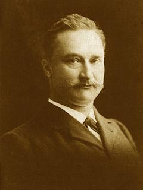

Biographien: Eugene Dubois

Eugene Dubois was the first person to ever deliberately search for fossils of human ancestors. Only a handful of fossil humans had already been discovered, and those were by chance. In a remarkable story of dedication and luck, Dubois succeeded in his unlikely quest.Eugene Dubois wurde 1858 in der niederländischen Stadt Eijsden geboren. Als Junge faszinierte ihn die Naturgeschichte, eine Beschäftigung, die von seinem Apotheker-Vater gefördert wurde. Als hervorragender Schüler studierte er Medizin und promovierte 1884 zum Doktor. Zwei Jahre später wurde er zum Anatomielehrer an der Universität Amsterdam ernannt und heiratete im selben Jahr. Im folgenden Jahr gab er dies auf, um sich in den Niederländischen Ostindien, heute Indonesien, nach Fossilien menschlicher Vorfahren zu erkundigen.
Niemand ist sich ganz sicher, warum Dubois einen guten Job aufgab, um die halbe Welt zu reisen, was die meisten Menschen sicherlich als eine vergebliche Suche betrachtet hätten. Offensichtlich muss er sich für die menschliche Evolution interessiert haben. Er hatte auch festgestellt, dass er seinen Job als Anatomielehrer, insbesondere seine Lehraufgaben, nicht mochte. Schließlich schien Dubois zu glauben, dass sein Betreuer, Max Furbringer, sich einige seiner eigenen Ideen angeeignet habe, und Dubois wollte ihre professionelle Beziehung beenden. Dies hatte wenig oder keinen Wert; Furbringer scheint sich gegenüber Dubois immer korrekt und sogar großzügig verhalten zu haben. Doch während seines gesamten Lebens scheint Dubois eine fast fanatische Angst vor anderen Wissenschaftlern gehabt zu haben, die sich seine Ideen aneignen könnten.
Er wählte die Ostindien, weil er wie Darwin und viele andere glaubte, dass sich der Mensch in den Tropen entwickelt habe. Er war der Ansicht, dass der Mensch eng mit Gibbons verwandt sei, die in Indonesien vorkommen. Ein in Indien gefundener Fossil-Affe bestärkte ihn zudem in der Überzeugung, dass Asien ein guter Ort sein würde, um Fossilien von Menschenaffen zu suchen. Und als Niederländer war eine niederländische Kolonie wie Indonesien ein bequemer Ort für ihn, um zu leben und zu arbeiten.
Dubois trat als Arztoffizier in die niederländische Armee ein, und er mit seiner Frau und dem Baby erreichte im Dezember 1887 die Insel Sumatra. Wenn er freie Zeit von seinen medizinischen Pflichten hatte, suchte er nach Fossilien. Die frühen Ergebnisse waren vielversprechend, und die Regierung stellte ihm zwei Ingenieure und 50 Zwangsarbeiter zur Verfügung, um ihm zu helfen, doch die Ergebnisse enttäuschten aufgrund der schwierigen Bedingungen. Die Region war dicht bewaldet ohne Wege, Wasser war knapp, einer der Ingenieure wurde abgezogen, weil er unbrauchbar war, und der andere starb, und viele seiner Arbeiter flohen oder erkrankten. Einige Fossilien wurden gefunden, doch sie stammten aus relativ neuer Zeit.
Dubois entschied, dass die Aussichten in Java besser sein würden, und ließ sich 1890 dorthin versetzen. Ein Grund für diese Entscheidung war ein menschlicher Schädel, den ein Bergbauingenieur 1888 in Wadjak gefunden hatte. Dubois begann an derselben Stelle zu suchen und fand einen zweiten, weniger vollständigen Schädel. Anschließend suchte er in offeneren Gebieten, insbesondere an einer Stelle am Ufer des Solo-Flusses, die sich als ergiebig erwies. Wiederum wurden ihm zwei Ingenieure und eine Mannschaft von Strafgefangenen zur Unterstützung zugeteilt. (Diesmal waren beide Ingenieure kompetent und schafften es, am Leben zu bleiben.)
Im September 1890 fanden seine Arbeiter einen menschlichen oder menschenähnlichen Fossilienfund bei Koedoeng Broeboes. Dies bestand aus der rechten Seite des Kinns eines Unterkiefers und drei daran angefügten Zähnen. Im August 1891 fand er einen Primaten-Molaren. Zwei Monate später und einen Meter entfernt wurde ein intakter Schädelkappen-Fund entdeckt, das Fossil, das als Java Man bekannt werden sollte. Im August 1892 wurde ein dritter Primaten-Fossil, ein fast vollständiger linker Oberschenkelknochen, zwischen 10 und 15 Metern entfernt von der Schädelkappe gefunden.
Im Jahr 1894 veröffentlichte Dubois eine Beschreibung seiner Fossilien und benannte sie Pithecanthropus erectus, beschreibend sie weder als Affe noch als Mensch, sondern als etwas Zwischenstadium. Im Jahr 1895 kehrte er nach Europa zurück, um das Fossil und seine Interpretation zu fördern. Einige Wissenschaftler unterstützten Dubois' Arbeit enthusiastisch, doch die meisten hatten Bedenken gegen seine Interpretation. Fast alle waren sich einig, dass der Femur effektiv nicht von einem menschlichen Femur zu unterscheiden war, doch es wurde weit verbreitet bezweifelt, ob er, wie Dubois behauptete, von derselben Person wie der Schädelkappen stammte. Einige französische Wissenschaftler nahmen vorsichtig an, dass Dubois recht haben könnte. Deutsche Wissenschaftler neigten dazu, die Ansicht zu vertreten, dass der Schädelkappen von einem riesigen Affen wie einem Gibbon stammte, während englische Wissenschaftler dazu neigten, ihn als menschlich zu betrachten, stammend entweder von einem primitiven oder einem pathologischen Individuum, obwohl es plenty anderer Meinungen gab. Viele Wissenschaftler wiesen Ähnlichkeiten zwischen dem Schädelkappen des Java Man und Neandertal-Fossilien hervor.
Dubois verteidigte seine Interpretation energisch, antwortete auf seine Kritiker, lieferte weitere Informationen zu den Fossilien und reiste durch Westeuropa, um zu sprechen und die Fossilien auszustellen. Er wies darauf hin, dass viele Experten den Schädel als affenartig und viele andere als menschenähnlich betrachteten, was jedoch seine Argumentation, dass es sich um eine Mischung aus beiden handelte, tatsächlich stärkte. Im Laufe der Zeit gewann Dubois' Position mehr Unterstützung, obwohl die Fossilien weiterhin umstritten blieben.
Um 1900 hörte Dubois auf, über den Java-Menschen zu sprechen, und verstaute die Fossilien in seinem Haus, während er sich anderen Forschungsthemen zuwandte. Dies könnte geschahen sein, um seine intellektuelle Priorität zu schützen; Dubois war wütend geworden, als ein anderer Wissenschaftler einen Abguss der Schädelkappe erhielt und daraufhin eine detaillierte Studie verfasste, die alles übertraf, was Dubois bisher geleistet hatte. Mit Dubois aus dem Streit und den Fossilien unzugänglich, legte die Kontroverse ab. 1897 wurde ihm von der Universität Amsterdam ein Ehrendoktorat in Botanik und Zoologie verliehen, und 1899 wurde er dort Professor für Kristallographie, Mineralogie, Geologie und Paläontologie. (Das war nicht so beeindruckend, wie es klang; er verdiente weniger als zehn Jahre zuvor als Anatomielehrer).
In den folgenden Jahrzehnten führte er Forschungen in zahlreichen Bereichen durch. Insbesondere widmete er sich viel Mühe dem Verständnis der Beziehung zwischen Körpergewicht und Gehirngewicht. Er entwickelte schließlich ein kompliziertes Schema, bei dem alle Tiere einen bestimmten Grad an Enzephalisation aufwiesen, der in Sprüngen von zwei zunahm (so menschlich 1, Affen 1/4, Katzen und Hunde 1/8 usw.). Es war ein pionierhafter Ansatz, doch Dubois' Ergebnisse waren hoffnungslos fehlerhaft, basierend auf einer kleinen Menge realer Daten und einer großen Menge an Spekulation und Sonderwünschen. Nach diesem Schema hatte der Java-Mann, insbesondere wenn er mit gibbonartigen Körperproportionen rekonstruiert wurde, einen Index von 1/2, was ihn passend in die Lücke zwischen Affen und Menschen einordnete. (Gould 1993)
Erst 1923 erlaubte Dubois unter Druck von Wissenschaftlern erneut den Zugang zu den Java-Man-Fossilien. Dies und die Entdeckung ähnlicher Fossilien führten dazu, dass die Frage erneut Gegenstand von Debatten wurde. Die ersten beiden Schädel des Peking-Menschen wurden 1929 gefunden, weitere drei im Jahr 1936. Ende der 1930er Jahre wurden weitere pithekanthropine Fossilien in Java bei Sangiran entdeckt. Allen anderen war klar, dass all diese Fossilien sehr ähnlich zu Dubois ursprünglicher Fund waren, doch Dubois widersetzte sich dieser Idee vehement und behauptete, alle seien menschlich in der Grade, während nur sein Fossil die Lücke zwischen Menschen und Affen fülle. In einem Versuch, den Java-Man von diesen späteren Funden abzugrenzen, betonte Dubois die affenartigen Merkmale seines Fossils, was zur häufigen Mythese führte, dass er den Java-Man für bloß einen Gibbon gehalten habe und seinen Anspruch auf seinen intermediären Status aufgegeben habe.
Dubois war offiziell 1928 in den Ruhestand getreten, blieb aber wissenschaftlich aktiv und so stur wie immer, bis zu seinem Tod im Jahr 1940. In einer Trauerrede beschrieb ihn Arthur Keith treffend als
"... ein Idealist, dessen Ideen so fest verankert waren, dass sein Verstand dazu neigte, Fakten zu verzerren, anstatt seine Ideen zu ändern, um sie den Fakten anzupassen."
Referenzen
Gould S.J. (1993): Men of the thirty-third division. In Eight little piggies. (pp. 124-37). New York: W.W.Norton. (an essay about Eugene Dubois' theories on Java Man)Shipman P. (2001): Der Mann, der das fehlende Glied fand: das außergewöhnliche Leben von Eugene Dubois. New York: Simon & Schuster.
Theunissen B. (1989): Eugene Dubois und der Menschenaffe aus Java. Dordrecht, Niederlande: Kluwer Academic Publishers.
Kreationistische Argumente über den Java-Menschen
Hat Dubois den Wadjak-Menschen versteckt?
Chasing Dubois's Ghost, von Pat Shipman
Diese Seite ist Teil des FAQ zu fossilen Menschenaffen im TalkOrigins-Archiv.
Startseite |
Arten |
Fossilien |
Kreationismus |
Lektüre |
Referenzen
Illustrationen |
Neuigkeiten |
Feedback |
Suche |
Links |
Fiktion
http://www.talkorigins.org/faqs/homs/edubois.html, 30.04.2003
Copyright © Jim Foley
|| E-Mail mir